Overview
The context
The Straits Times — Singapore's highest-circulation English-language newspaper — had no unified design system for its digital platforms. Designers worked from fragmented component libraries across multiple files, with no shared tokens, no consistent type scale, and no mode architecture.
I was embedded in the SPH Media digital design team as a Digital Designer to build the Figma Design Library from scratch — a complete 3-tier system covering design tokens, components, and page templates — and to introduce the team to Figma's advanced features, including Variables for multi-mode theming, that most designers hadn't used before.
| Company | SPH Media / The Straits Times |
| My Role | Digital Designer (Contract) |
| Timeline | Nov 2023 – May 2025 |
| Team | Designers, Developers, Editorial |
| Tools | Figma, Figma Variables, Notion |
| Scope | Tokens → Components → Templates |
What is a design system?
The foundation we were building
A collection of reusable components, governed by clear standards, that can be assembled together to build any number of applications or products.
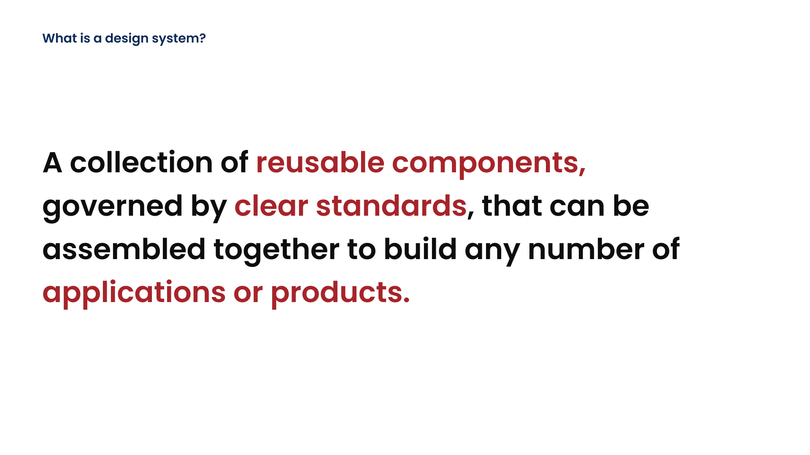
Core definition shared with the team during the design system kickoff
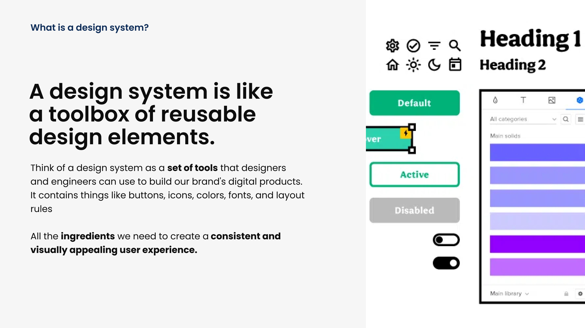
A design system is a toolbox of reusable design elements — buttons, colours, fonts, and layout rules
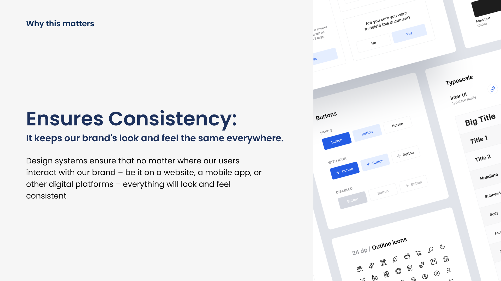
Consistency: keeps the brand's look and feel the same everywhere, across every digital touchpoint
Why this matters
The case for building it
Saves time
Design system as a common language between designer and engineers
Instead of reinventing the wheel for every new project, design systems provide pre-made components and guidelines. Basic elements are available similarly to a lego kit — allowing designers, stakeholders, and engineers to focus on more important things such as user experience, strategy, and solutioning.
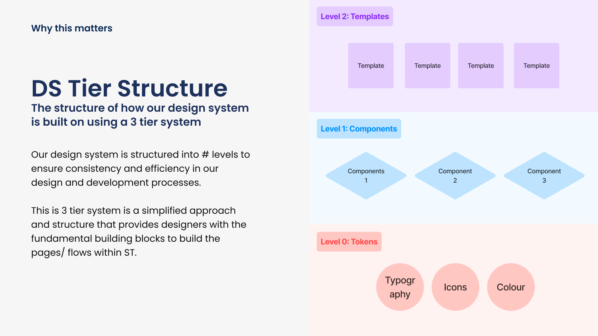
Works for growth
Adds scalability to our brand through tokenisation
As the brand evolves and expands, the design system can easily adapt to new requirements. With tokenisation done right, changes can be made universally without a lot of manual effort from both engineering and design — saving manhours at every scale.
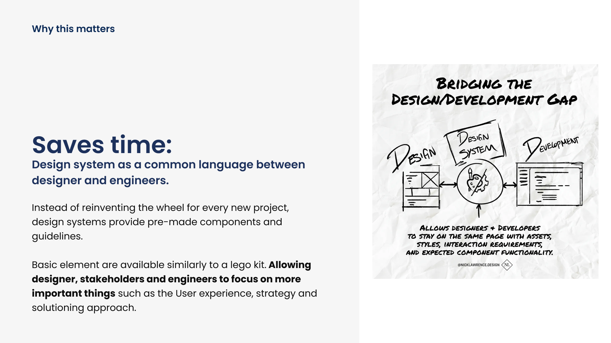
In a nutshell
Six reasons a design system exists
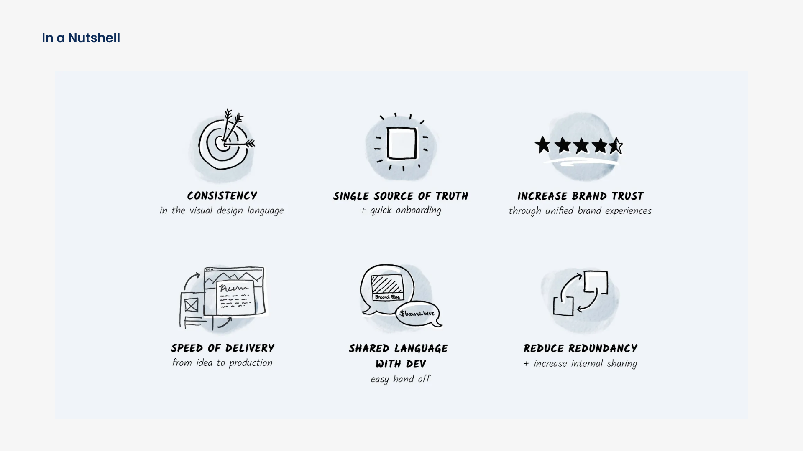
Consistency · Single source of truth · Brand trust · Speed of delivery · Shared language with dev · Reduce redundancy
Consistency
in the visual design language
Single Source of Truth
+ quick onboarding
Increase Brand Trust
through unified brand experiences
Speed of Delivery
from idea to production
Shared Language with Dev
easy handoff
Reduce Redundancy
+ increase internal sharing
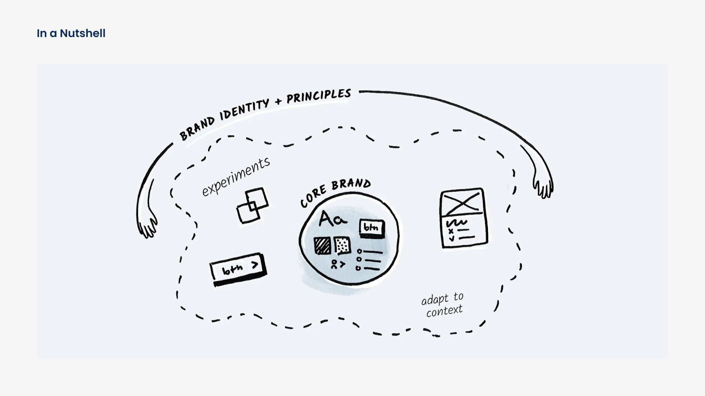
A design system encompasses core brand, experiments, and context-specific adaptations — all governed by Brand Identity + Principles
Benefits of the design system
What it unlocks for every team

- Can decide on UX flow decisions faster
- Can focus on more business goals instead of consistency
- Can increase delivery and save time per feature
- Better alignment on design patterns and styles
- Can improve design consistency and alignment
- Can improve productivity, free up for more solutioning
- Can improve usability metrics
- Can solve more complex problems
- Can reduce visual review process — there is a clear standard
- Can concentrate on core logic
- Can reduce bugs
- Can improve UI efficiently and consistently — scalability improves
- Can decrease cost of QA — consistent tokens are used
- Clearer alignment with designer on the designs
System architecture
DS Tier Structure — a 3-level system
The design system is structured into 3 levels to ensure consistency and efficiency in our design and development processes. This simplified approach provides designers with the fundamental building blocks to construct any page or flow within The Straits Times digital platform.
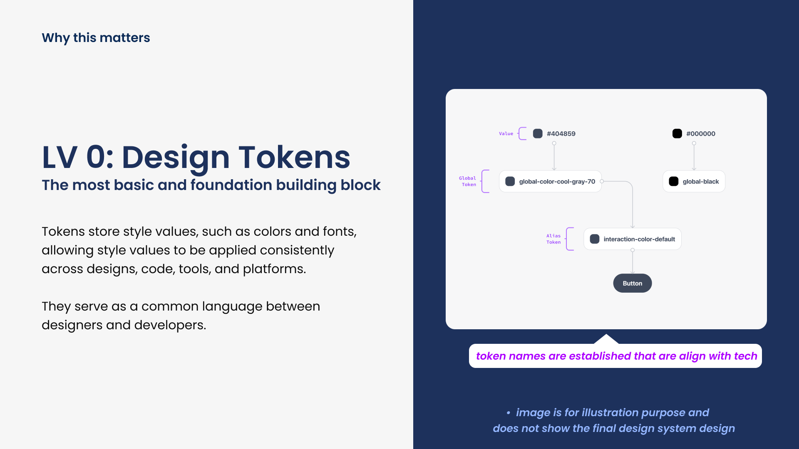
3-tier architecture: Level 0 Tokens (Typography, Icons, Colour) → Level 1 Components → Level 2 Templates
Design Tokens
The most basic and foundational building blocks. Tokens store style values such as colours, typography, and spacing — allowing values to be applied consistently across designs, code, tools, and platforms. They serve as a common language between designers and developers.
Components
The Component Kit builds upon the Token layer by offering pre-designed, reusable UI components — buttons, cards, navigation bars, and form elements. Components are assembled from tokens, so any token change propagates automatically.
Templates
The Template Kit represents the top tier — complete design templates for common use cases. Templates maintain consistent layout, margins, and structure. They serve as service flows for product delivery within ST's editorial platform.

Visual breakdown of each level: Design Tokens → Components → Pages / Templates
Level 0 — Design tokens
The most basic and foundational building block
Token names are aligned with tech
Tokens store style values, such as colours and fonts, allowing style values to be applied consistently across designs, code, tools, and platforms. They serve as a common language between designers and developers. Token names are established that align directly with engineering — eliminating translation ambiguity at every handoff.
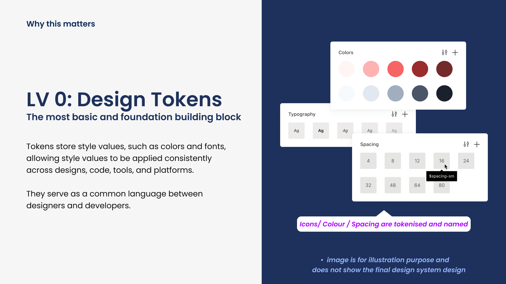
Icons / Colour / Spacing are tokenised and named
Colour palettes, typography scales, and spacing values are all tokenised and named in Figma Variables. A single colour change in the token layer propagates instantly across every component and template that references it — without any manual find-and-replace.
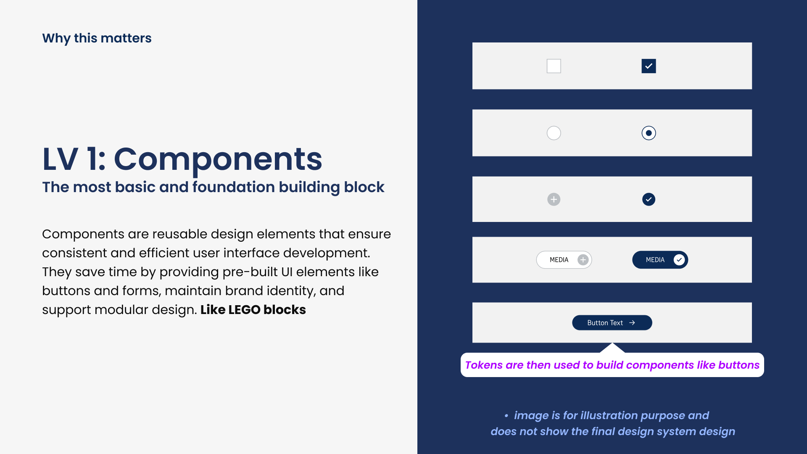
Colour tokens — the problem
Why we need this — problems colour tokens solve
Reduce redundant duplicates
Prevent duplicate colours by assigning specific meanings to each token, ensuring consistent colour usage across the entire platform.
Consistent naming and structure
Establish a standardised and clear naming structure, reducing inconsistencies and improving communication between designers and developers.
Reduce confusion and redundant colours
By having a single source of truth we avoid confusion and inconsistencies. An audit found duplicates of multiple shades of grey with different naming styles — this eliminated that entirely.
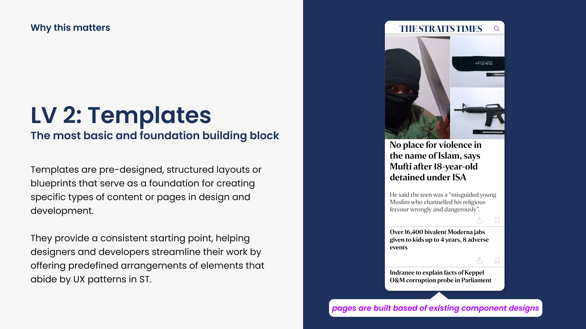
Colour tokens
Light and Dark mode colour token structure
Colour tokens are semantically named style labels that are each assigned 2 colour values — one for the default palette (light mode) and another for the dark mode palette. A single token name resolves to the correct colour in each mode automatically.
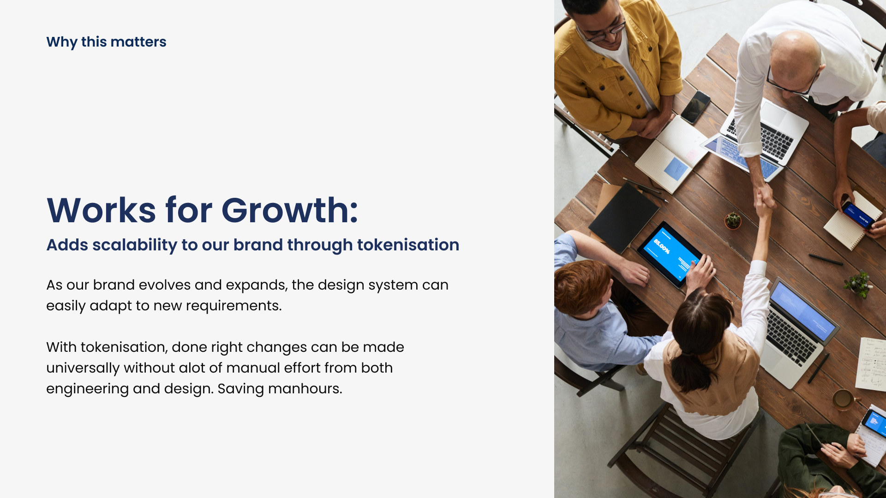
Button Primary Default: #0C2B57 in Light mode (14.01:1 contrast) · #2B568F in Dark mode (2.52:1 contrast) — each token carries both values

Complete colour token reference export from Figma — showing full Light and Dark mode token mapping side by side
Colour token naming
Semantic naming — how and when to use each token
Tokens are built using semantic names that help provide an understanding of how or when the token should be used. Token names are aligned with engineering conventions from day one.
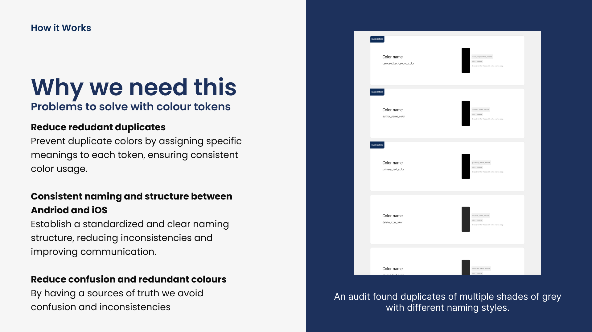
Button-Primary-Default is more useful than navy-blue — because when the colour changes, the name remains correct.
Colour tokens — status
Status colours — four token states
Status tokens are used in components that can showcase a particular status to the user. There are 4 status types — success, disabled, alert, error. However, states are dependent on the use case of the token and will not be applied to ALL components.
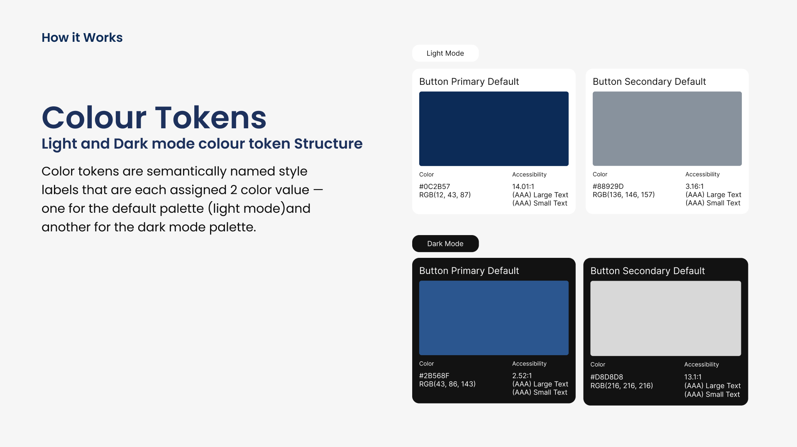
4 status tokens: Success (green) · Disabled (grey) · Alert (amber) · Error (red)
Level 1 — Components
Tokens assembled into reusable UI elements
Tokens are then used to build components — like LEGO blocks
Components are reusable design elements that ensure consistent and efficient user interface development. They save time by providing pre-built UI elements like buttons and forms, maintain brand identity, and support modular design. Every component is assembled from tokens — meaning any token change cascades automatically to every component instance.
Components ship with multiple variants: default, hover, active, and disabled states. All built for both Light and Dark mode simultaneously using Figma Variables.
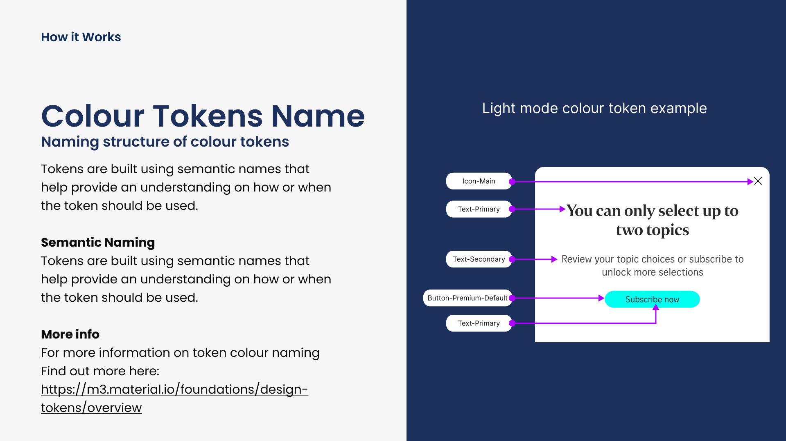
Level 2 — Templates
Components assembled into page blueprints
Pages are built based on existing component designs
Templates are pre-designed, structured layouts or blueprints that serve as a foundation for creating specific types of content or pages in design and development. They provide a consistent starting point, helping designers and developers streamline their work by offering predefined arrangements of elements that abide by UX patterns in ST.
New stories and editorial features start from a template — never a blank frame. This eliminated the 14-day production cycle for special reports.
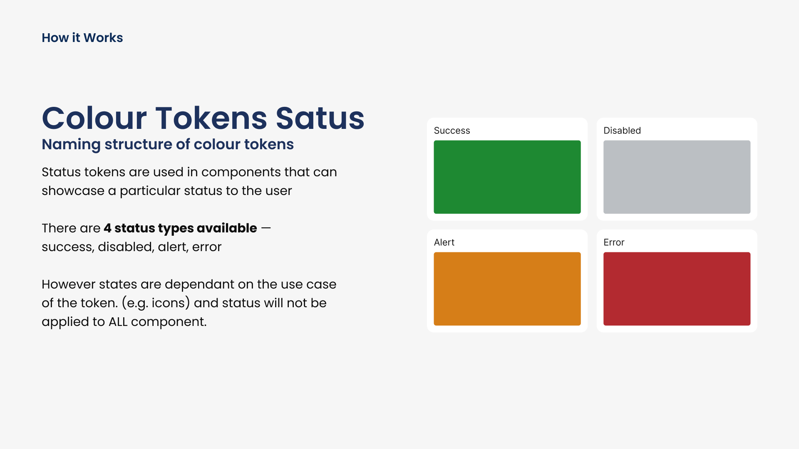
How I built it
The process
Interviews
Token Layer
UI Atoms
Components
Templates
Handoff
Outcomes
Impact
Unified visual identity
Single design library replaced fragmented file sprawl. ST's brand is now consistent across all digital touchpoints for the first time.
Light & Dark mode at zero cost
Full colour mode switching via Figma Variables — no duplicated component sets, no manual overrides. Mode parity shipped on day one.
Faster production cycles
Templates reduced editorial story production from ~14 days to under 5 days. New stories start from a proven scaffold, not a blank frame.
Shared language with engineering
Semantic token names align directly with CSS variable conventions — developers ship from token references, not visual interpretation.
My learnings
What this project taught me
- A design system is an organisational product, not a Figma file. The hardest problem was building trust — getting the team to adopt a shared source of truth rather than maintaining local copies.
- The token layer is the highest-leverage investment in the entire system. Every shortcut at Level 0 multiplies into complexity at Level 1 and Level 2.
- Figma Variables transformed the dark mode problem from a maintenance burden into a non-issue. Building for both modes simultaneously from day one was the single best architectural decision.
- Semantic naming pays for itself immediately. When a colour value changes, a semantically named token stays correct — a colour-name token does not.
- Onboarding the team to advanced Figma features (Variables, component properties) was as important as the system itself. A system nobody understands is a system nobody uses.
Next steps
Extend the token system to native mobile (iOS / Android) using the same Figma Variables architecture. Build a documentation site alongside the Figma library so onboarding new designers takes hours, not days. Introduce component usage tracking to identify which components are most adopted — and which patterns accumulate as dead weight over time.